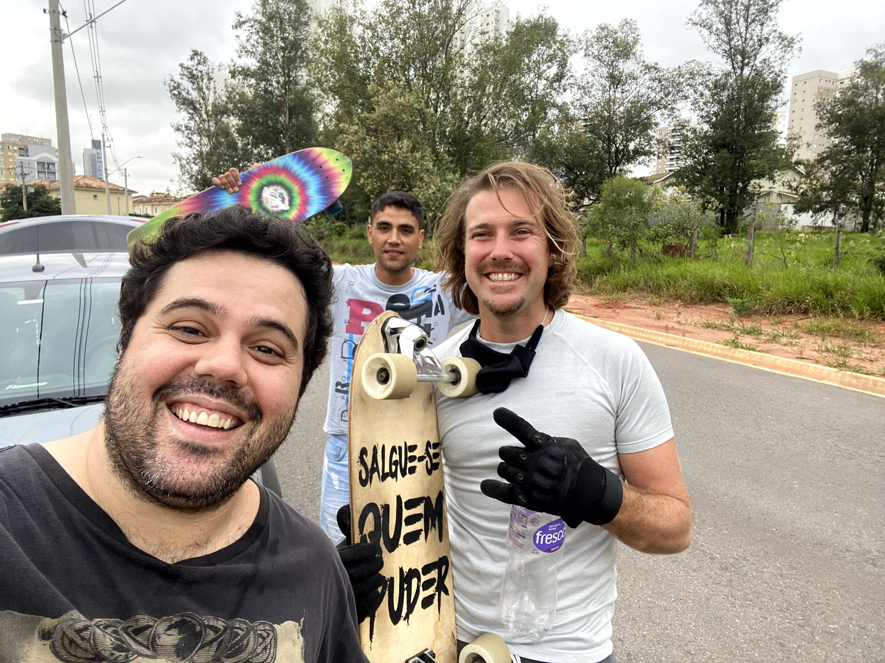
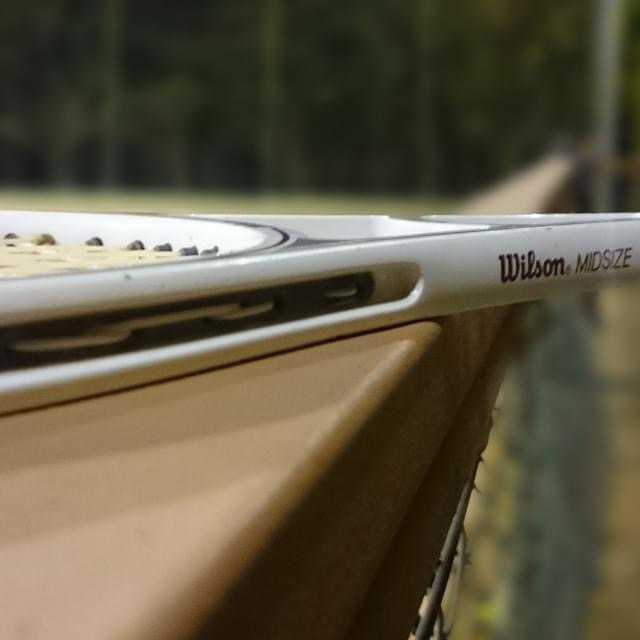
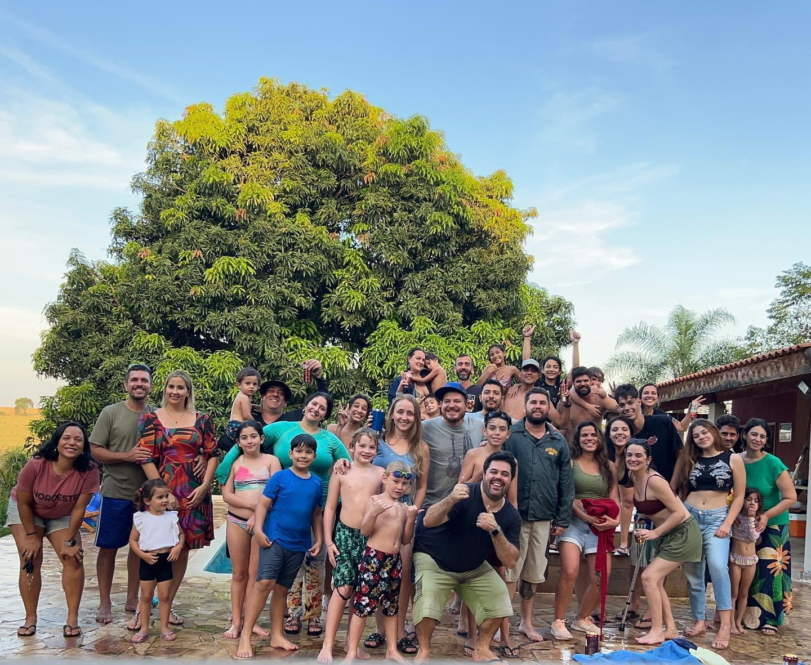
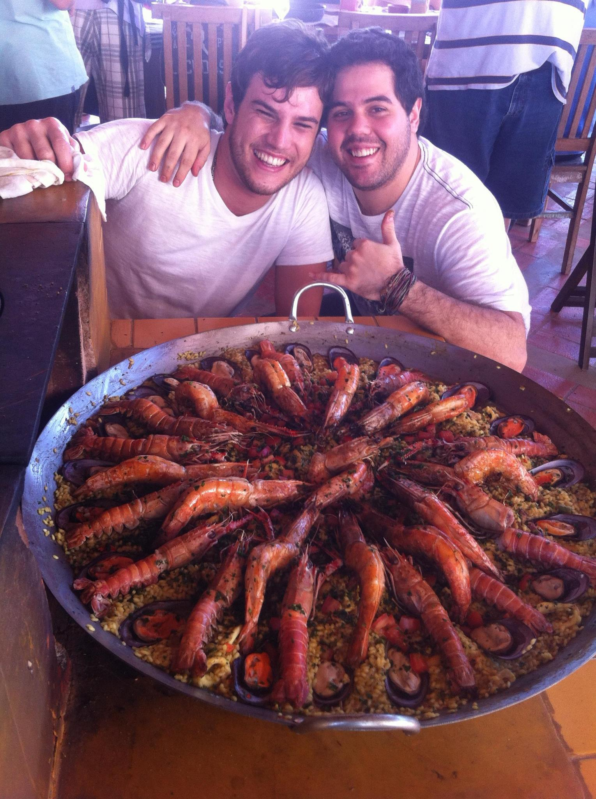

Hobbies
- Surf-Skate:
Se trata de uma modalidade de skate que tras os movinentos do surf para o
asfalto.
Pratico o surf-skate a aproximadamente 4 anos, e é sem dúvidas meu esporte favorito

- Tennis:
Outro esporte que pratico com frequência é o tennis.

- Churrasco com a galera:
Uma das coisas que mais faço em meu tempo livre, são
churrascos com
meus amigos e familiares

- Cozinhar:
O que foi minha profissão por aproximadamente 16 anos, hoje se tornou um
hobbie que pratico quase diariamente
